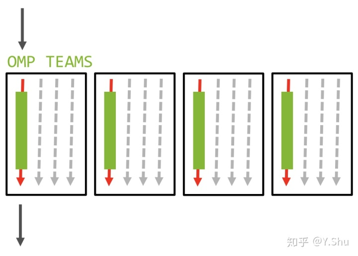

2.3. Creating SPMD parallelism using OpenMP teams directive#
In OpenMP, the teams directive plays a crucial role, especially in the context of offloading computations to devices such as GPUs.
The teams directive in OpenMP is used to create a league of thread teams, each of which can execute concurrently. This directive is particularly useful in scenarios where a hierarchical parallelism model is desired. For example, in GPU programming, a common pattern is to distribute work among multiple teams of threads, where each team can further parallelize the work among its member threads.
Unlike the parallel directive, which is used to create a single team of threads, the teams directive allows for the creation of multiple teams, providing an additional level of parallelism. This makes the teams directive a powerful tool for exploiting the parallel capabilities of modern hardware architectures, especially in the context of heterogeneous computing.
In this chapter, we will explore the basic usage of the teams directive, its interaction with other OpenMP directives, and how it can be used to target parallel execution on devices like GPUs. By the end of this chapter, you should have a solid understanding of the teams directive and how to leverage it to write efficient parallel programs with OpenMP.
2.3.1. Basic Usage#
2.3.1.1. teams Directive#
The teams directive indicates that the loop that follows is split among multiple thread teams, one thread team computing one part of the task. Developers can use the teams directive to use a large number of thread teams.
The following figure shows the execution model of the teams directive:

A league of teams is created when a thread encounters a teams construct. Each team is an initial team, and the initial thread in each team executes the team area.
After a team is created, the number of initial teams remains the same for the duration of the teams region.
Within a teams region, the initial team number uniquely identifies each initial team. A thread can obtain its own initial team number by calling the omp_get_team_num library routine.
The teams directive has the following characteristics:
the
teamsdirective can spawn one or more thread teams with the same number of threadscode is portable for one thread team or multiple thread teams
only the primary thread of each team continues to execute
no synchronization between thread teams
programmers don’t need to think about how to decompose loops
OpenMP was originally designed for multithreading on shared-memory parallel computers, so the parallel directive only creates a single layer of parallelism.
The team instruction is used to express the second level of scalable parallelization. Before OpenMP 5.0, it can be only used on the GPU (with an associated target construct). In OpenMP 5.0 the teams construct was extended to enable the host to execute a teams region.
The syntax for the teams directive in C/C++ is:
#pragma omp teams [clause[ [,] clause] ... ] new-line
structured-block
The syntax in Fortran is:
!$omp teams [clause[ [,] clause] ... ]
loosely-structured-block
!$omp end teams
In its simplest form, the teams directive can be used without any clauses:
#pragma omp teams
{
// Code to be executed by each team
}
This will create a league of teams, with the number of teams and the number of threads per team determined by the implementation. Typically, the number of teams is chosen to match the number of available processing units, such as cores or GPU compute units.
2.3.1.2. Example: Creating Teams#
Here’s a basic example that demonstrates the use of the teams directive:
#include <stdio.h>
#include <omp.h>
int main() {
#pragma omp teams
{
printf("Team %d out of %d teams\n", omp_get_team_num(), omp_get_num_teams());
}
return 0;
}
In this example, each team will print its team number and the total number of teams. The omp_get_team_num() function returns the team number of the calling thread, and the omp_get_num_teams() function returns the total number of teams in the current league.
When executed, the program might produce output similar to the following, depending on the number of teams created by the implementation:
Team 0 out of 4 teams
Team 1 out of 4 teams
Team 2 out of 4 teams
Team 3 out of 4 teams
This simple example demonstrates the basic usage of the teams directive to create multiple teams of threads. In the following sections, we will explore how to control the number of teams and threads, and how the teams directive interacts with other OpenMP directives for more complex parallel programming scenarios.
2.3.2. Interaction with Other Directives#
The teams directive in OpenMP is often used in conjunction with other directives to create a hierarchical parallelism model. This section explores how the teams directive interacts with the distribute, parallel, and target directives.
2.3.2.1. Teams and Distribute Directives#
The distribute directive is used to distribute the iterations of a loop across the teams created by the teams directive. This combination is particularly useful for data parallelism where each team works on a different portion of the data.
Example: Distributing loop iterations across teams to perform a parallel reduction.
#include <omp.h>
#include <stdio.h>
int main() {
const int N = 1000;
int array[N];
int sum = 0;
// Initialize the array with some values
for (int i = 0; i < N; i++) {
array[i] = i;
}
#pragma omp target teams distribute reduction(+:sum)
for (int i = 0; i < N; i++) {
sum += array[i];
}
printf("Sum: %d\n", sum);
return 0;
}
In this example, the loop iterations are distributed across teams, and each team contributes to the reduction operation to calculate the sum of the array elements.
2.3.2.2. Teams and Parallel Directives#
The teams directive can also be combined with the parallel directive to create nested parallelism. Within each team, the parallel directive creates a parallel region where multiple threads can work concurrently.
Example: Using nested parallelism with the teams and parallel directives to perform matrix multiplication.
#include <omp.h>
#include <stdio.h>
#define N 1000
#define M 1000
#define P 1000
int main() {
double A[N][M], B[M][P], C[N][P];
// Initialize matrices A and B
// ...
#pragma omp target teams
{
#pragma omp distribute parallel for collapse(2)
for (int i = 0; i < N; i++) {
for (int j = 0; j < P; j++) {
double sum = 0.0;
for (int k = 0; k < M; k++) {
sum += A[i][k] * B[k][j];
}
C[i][j] = sum;
}
}
}
// Print matrix C
// ...
return 0;
}
In this example, the outer loop iterations (over i and j) are distributed across teams, and within each team, the loop iterations are executed in parallel by the team’s threads.
2.3.2.3. Teams and Target Directives#
The teams directive is commonly used with the target directive for offloading computations to a device, such as a GPU. The target directive specifies that the code block should be executed on the device, and the teams directive creates teams of threads on the device to execute the code.
Example: Offloading a computation to a device and using teams to perform the computation in parallel.
#include <omp.h>
#include <stdio.h>
#define N 1000
int main() {
float A[N], B[N], C[N];
// Initialize arrays A and B
// ...
#pragma omp target teams map(to: A, B) map(from: C)
{
#pragma omp distribute parallel for
for (int i = 0; i < N; i++) {
C[i] = A[i] + B[i];
}
}
// Print array C
// ...
return 0;
}
In this example, the computation of the element-wise sum of two arrays is offloaded to a device. The teams directive is used to create teams of threads on the device, and the distribute parallel for construct is used to distribute the loop iterations across the teams and execute them in parallel.
2.3.2.4. Summary#
The teams directive provides a flexible way to create a hierarchical parallelism model in OpenMP. By combining the teams directive with the distribute, parallel, and target directives, developers can efficiently utilize the parallel capabilities of both CPUs and GPUs for a wide range of applications.
2.3.3. Data Environment#
The teams directive in OpenMP creates a new data environment for the region of code it encloses. This section discusses the data-sharing attributes and other aspects of the data environment created by the teams directive.
2.3.3.1. Data-Sharing Attributes#
Within a teams region, variables can have one of the following data-sharing attributes: shared, private, firstprivate, or reduction. The default data-sharing attribute for variables in a teams region is determined by the default clause if present; otherwise, it follows the rules of the OpenMP specification.
Shared: Variables with the shared attribute are shared among all threads in all teams. Each team accesses the same storage location for shared variables.
Private: Variables with the private attribute have a separate copy for each thread. Each thread in each team has its own copy of private variables.
Firstprivate: Similar to private, but each thread’s copy is initialized with the value of the variable before entering the
teamsregion.Reduction: Variables with the reduction attribute are subject to a reduction operation at the end of the
teamsregion.
2.3.3.2. Example: Data-Sharing Attributes in Teams Region#
#include <omp.h>
#include <stdio.h>
int main() {
int shared_var = 100;
int private_var = 200;
#pragma omp target teams map(shared_var) private(private_var)
{
// Inside the teams region
private_var += omp_get_team_num();
#pragma omp parallel reduction(+:shared_var)
{
shared_var += private_var;
}
}
printf("Shared variable: %d\n", shared_var);
return 0;
}
In this example, shared_var is shared among all teams and threads, while private_var is private to each thread. The value of shared_var is modified through a reduction operation within the parallel region inside the teams region.
2.3.3.3. Summary#
Understanding the data environment and data-sharing attributes in a teams region is crucial for writing correct and efficient parallel programs with OpenMP. Properly managing the data environment ensures that data is correctly shared or privatized among teams and threads, avoiding data races and other concurrency issues.
2.3.4. Clauses#
The teams directive in OpenMP can be used with several clauses to control the behavior of the teams and the data environment. This section discusses the clauses with the teams directive.
2.3.4.1. num_teams Clause#
Syntax: num_teams(integer-expression)
The num_teams clause specifies the number of teams to be created in the teams region.
Example:
#include <omp.h>
#include <stdio.h>
int main() {
#pragma omp target teams num_teams(4)
{
printf("Team %d out of %d teams\n", omp_get_team_num(), omp_get_num_teams());
}
return 0;
}
2.3.4.2. thread_limit Clause#
Syntax: thread_limit(integer-expression)
The thread_limit clause specifies the maximum number of threads that can be part of each team.
Example:
#include <omp.h>
#include <stdio.h>
int main() {
#pragma omp target teams thread_limit(8)
{
#pragma omp parallel
{
printf("Thread %d in team %d\n", omp_get_thread_num(), omp_get_team_num());
}
}
return 0;
}
2.3.4.3. reduction Clause#
Syntax: reduction(operator: list)
The reduction clause is used to perform a reduction operation on variables that are private to each thread but shared across the teams.
Example:
#include <omp.h>
#include <stdio.h>
int main() {
int sum = 0;
#pragma omp target teams map(tofrom: sum) reduction(+:sum)
{
#pragma omp parallel
{
sum += omp_get_thread_num();
}
}
printf("Sum: %d\n", sum);
return 0;
}
2.3.4.4. default Clause#
Syntax: default(shared | none)
The default clause sets the default data-sharing attribute for variables in the teams region.
Example:
#include <omp.h>
#include <stdio.h>
int main() {
#pragma omp target teams default(none)
{
int x;
// Code that uses the variable x
}
return 0;
}
2.3.4.5. allocate Clause#
Syntax: allocate([allocator:] list)
The allocate clause specifies the allocator to be used for the variables in the list.
Example:
#include <omp.h>
#include <stdio.h>
int main() {
#pragma omp target teams allocate(x)
{
// Code that uses the variable x
}
return 0;
}
2.3.4.7. private Clause#
Syntax: private(list)
The private clause specifies that each thread should have its own instance of a variable.
Example:
#include <omp.h>
#include <stdio.h>
int main() {
#pragma omp target teams private(x)
{
// Each thread has its own private copy of x
}
return 0;
}
2.3.4.8. firstprivate Clause#
Syntax: firstprivate(list)
The firstprivate clause provides each thread with its own copy of a variable and initializes each copy with the value of the variable at the time the parallel region is entered.
Example:
#include <omp.h>
#include <stdio.h>
int main() {
#pragma omp target teams firstprivate(x)
{
// Each thread has its own copy of x, initialized with the value of x
}
return 0;
}
2.3.4.9. Summary#
Clauses provide a powerful way to customize the behavior of the teams directive in OpenMP. By using clauses like num_teams, thread_limit, reduction, default, allocate, shared, private, and firstprivate, programmers can control various aspects of the teams’ behavior and the data environment.
2.3.5. Targeting Devices#
In modern computing, harnessing the power of specialized hardware such as Graphics Processing Units (GPUs) is essential for achieving high performance in parallel computing. OpenMP provides a seamless way to offload computations to these devices using the target and teams directives.
2.3.5.1. Offloading with Target and Teams Directives#
The target directive instructs the compiler to execute the enclosed code block on a specified device, typically a GPU. The teams directive, when used in conjunction with target, creates a league of thread teams to execute the code in parallel on the device.
Example: Vector Addition on a GPU
Consider the following example where two arrays are added element-wise and the result is stored in a third array:
#include <omp.h>
#include <stdio.h>
int main() {
const int N = 1000;
float a[N], b[N], c[N];
// Initialize the input arrays
for (int i = 0; i < N; i++) {
a[i] = i * 1.0f;
b[i] = i * 2.0f;
}
// Offload the computation to a GPU
#pragma omp target teams map(to: a, b) map(from: c)
{
#pragma omp distribute parallel for
for (int i = 0; i < N; i++) {
c[i] = a[i] + b[i];
}
}
// Output the result
for (int i = 0; i < N; i++) {
printf("%f ", c[i]);
}
return 0;
}
In this example, the target teams directive offloads the addition of arrays a and b to a GPU. The map clauses specify how data is transferred between the host and the device. The distribute parallel for directive ensures that the computation is performed in parallel by the teams of threads on the device.
2.3.5.2. Leveraging Device Parallelism#
Using the teams directive with the target directive enables you to harness the parallel processing capabilities of devices like GPUs. It allows for scalable parallel execution where the workload is distributed across multiple teams of threads, each executing concurrently on the device.
2.3.5.3. Summary#
The integration of the teams directive with the target directive in OpenMP provides a powerful and flexible approach to offloading computations to devices. This capability allows programmers to efficiently utilize the parallel processing power of GPUs and other devices, thereby enhancing the performance of parallel applications. In the following chapters, we will delve deeper into the map clause and explore other aspects of device offloading in OpenMP.
2.3.6. Best Practices for Effective Use of Teams Directive#
Optimizing the use of the teams directive in OpenMP is crucial for harnessing the full potential of parallel computing, especially when offloading computations to devices such as GPUs. Here are some essential best practices to keep in mind:
2.3.6.1. Optimal Team Configuration#
Selecting the appropriate number of teams is pivotal. It should be aligned with the target device’s architecture and the computational workload. For GPUs, a rule of thumb is to create a number of teams that corresponds to a multiple of the device’s compute units.
2.3.6.2. Workload Distribution#
Achieving a balanced distribution of work among teams is key to avoiding performance bottlenecks. Utilize the distribute directive in tandem with teams to ensure an equitable assignment of loop iterations or other computational tasks across the teams.
Example: Workload Distribution
#include <omp.h>
#include <stdio.h>
#define N 10000
int main() {
float array[N];
// Initialize the array
for (int i = 0; i < N; i++) {
array[i] = i;
}
// Distribute workload evenly among teams
#pragma omp target teams map(tofrom: array)
#pragma omp distribute
for (int i = 0; i < N; i++) {
array[i] = array[i] * 2.0f;
}
return 0;
}
2.3.6.3. Minimizing Data Movement#
Data transfer between the host and the device can significantly impact performance. Employ the map clause with precision to reduce unnecessary data movement. Additionally, explore techniques like data prefetching and overlapping data transfers with computation to enhance data locality.
Example: Efficient Data Movement
#include <omp.h>
#include <stdio.h>
#define N 10000
int main() {
float input[N], output[N];
// Initialize the input array
for (int i = 0; i < N; i++) {
input[i] = i;
}
// Minimize data movement in offloading
#pragma omp target teams map(to: input) map(from: output)
{
#pragma omp distribute parallel for
for (int i = 0; i < N; i++) {
output[i] = input[i] * 2.0f;
}
}
return 0;
}
2.3.6.4. Efficient Reductions#
Ensure that reductions are performed efficiently, especially when using the reduction clause with the teams directive. Implement parallel reduction algorithms that leverage the device’s parallel processing capabilities to avoid bottlenecks.
Example: Parallel Reduction
#include <omp.h>
#include <stdio.h>
#define N 10000
int main() {
float array[N];
float sum = 0.0f;
// Initialize the array
for (int i = 0; i < N; i++) {
array[i] = i;
}
// Efficient reduction on the device
#pragma omp target teams map(to: array) reduction(+:sum)
{
#pragma omp distribute parallel for
for (int i = 0; i < N; i++) {
sum += array[i];
}
}
printf("Sum: %f\n", sum);
return 0;
}
2.3.6.5. Debugging and Profiling#
Leverage OpenMP-aware debugging and profiling tools to identify and address performance bottlenecks. Regularly verify the correctness of parallel execution to ensure the expected behavior of your application.
2.3.6.6. Conclusion#
Adhering to these best practices will enable you to maximize the efficiency and correctness of your parallel applications using the teams directive in OpenMP. Tailor your approach to the specific requirements of your application and the capabilities of your target device for optimal results.
2.3.7. Advanced Topics#
While the basic usage of the teams directive provides a powerful tool for parallel computing, there are several advanced topics that can further enhance the performance and flexibility of your OpenMP applications. Here are some advanced topics related to the teams directive:
2.3.7.1. Nested Parallelism#
OpenMP supports nested parallelism, where a parallel region can be defined inside another parallel region. This can be particularly useful when using the teams directive to create a hierarchical parallelism model.
Example: Nested Parallelism
#include <omp.h>
#include <stdio.h>
int main() {
#pragma omp target teams
{
// Outer parallel region executed by teams
#pragma omp parallel
{
// Inner parallel region executed by threads within each team
printf("Team %d, Thread %d\n", omp_get_team_num(), omp_get_thread_num());
}
}
return 0;
}
In this example, an outer parallel region is created by the teams directive, and an inner parallel region is created by the parallel directive. Each team of threads executes the inner parallel region independently.
2.3.7.2. SIMD Parallelism#
The teams directive can be combined with SIMD (Single Instruction, Multiple Data) constructs to exploit vector parallelism on devices that support SIMD instructions.
Example: SIMD Parallelism
#include <omp.h>
#include <stdio.h>
#define N 10000
int main() {
float array[N];
// Initialize the array
for (int i = 0; i < N; i++) {
array[i] = i;
}
// Use SIMD parallelism within teams
#pragma omp target teams map(tofrom: array)
#pragma omp distribute
for (int i = 0; i < N; i++) {
#pragma omp simd
for (int j = 0; j < N; j++) {
array[j] = array[j] + 1.0f;
}
}
return 0;
}
In this example, the simd directive is used within the loop to enable SIMD parallelism, allowing multiple elements of the array to be processed simultaneously by SIMD instructions.
2.3.7.3. Interoperability with Other Programming Models#
OpenMP can interoperate with other programming models, such as MPI (Message Passing Interface) or CUDA, to take advantage of specific features of different parallel programming approaches.
Example: Interoperability with MPI
#include <omp.h>
#include <mpi.h>
#include <stdio.h>
int main(int argc, char *argv[]) {
MPI_Init(&argc, &argv);
int rank;
MPI_Comm_rank(MPI_COMM_WORLD, &rank);
#pragma omp target teams
{
printf("MPI Rank %d, Team %d\n", rank, omp_get_team_num());
}
MPI_Finalize();
return 0;
}
In this example, OpenMP is used in conjunction with MPI, where each MPI process executes an OpenMP teams region on a device. This allows for a hybrid parallel programming approach that combines distributed memory parallelism (MPI) with shared memory parallelism (OpenMP).
2.3.7.4. Summary#
Exploring advanced topics related to the teams directive can unlock new levels of performance and flexibility in your OpenMP applications. Whether it’s leveraging nested parallelism, exploiting SIMD instructions, or interoperating with other programming models, these advanced techniques can help you tackle complex parallel computing challenges.
2.3.8. Summary#
The teams directive is a powerful feature in OpenMP that enables the creation of a league of thread teams for parallel execution, particularly on devices such as GPUs. This chapter has covered the fundamental concepts, usage, and best practices associated with the teams directive, along with advanced topics for further exploration.
Key takeaways from this chapter include:
Basic Usage: The
teamsdirective, often used in conjunction with thetargetdirective, allows for offloading computations to a device with a specified number of teams and threads.Data Environment: Understanding and managing the data environment, including data-sharing attributes and clauses like
allocate,default,shared, andprivate, is crucial for efficient parallel execution.Targeting Devices: The combination of
targetandteamsdirectives provides a flexible and powerful approach to offload computations to devices, with themapclause playing a vital role in managing data movement.Best Practices: To maximize performance and ensure correct execution, it’s important to choose the right number of teams, balance the workload among teams, minimize data movement, use reductions efficiently, and employ debugging and profiling tools.
Advanced Topics: Exploring nested parallelism, SIMD parallelism, and interoperability with other programming models can further enhance the capabilities of your OpenMP applications.
By mastering the use of the teams directive, you can unlock new levels of parallelism and performance in your applications, making them more scalable and efficient on modern computing architectures.
2.3.9. Exercises#
Nested Parallelism: Modify the example code for nested parallelism to create a hierarchy of parallel regions using the
teamsdirective. Experiment with different numbers of teams and threads to observe the performance impact.SIMD Parallelism: Implement a matrix multiplication algorithm using SIMD parallelism within the
teamsdirective. Compare the performance of the SIMD-parallelized version with a non-parallelized version.Load Balancing: Write a program that performs a computation on a large array and uses the
distributedirective to distribute the workload among teams. Experiment with different load balancing strategies to minimize load imbalance.Reduction Operation: Modify the example code for the reduction clause to perform a more complex reduction operation, such as finding the maximum or minimum value in an array, using the
teamsdirective.Interoperability: Explore interoperability between OpenMP and another parallel programming model, such as MPI or CUDA. Write a program that combines both programming models to perform a parallel computation.
Debugging and Profiling: Use an OpenMP-aware debugging or profiling tool to analyze the performance of one of the previous exercises. Identify any performance bottlenecks and propose optimizations.
Optimization Strategies: Experiment with different optimization strategies, such as loop unrolling, loop tiling, or data prefetching, within the
teamsdirective to improve the performance of a parallelized computation.Real-world Application: Identify a real-world application that can benefit from parallelization using the
teamsdirective. Write a program that parallelizes a relevant part of the application and measure the performance improvement.Scalability Analysis: Conduct a scalability analysis of one of the previous exercises by varying the problem size and the number of teams/threads. Determine the scalability limits of your parallelized code.
Advanced Topics Exploration: Choose one of the advanced topics discussed in this chapter, such as nested parallelism or SIMD parallelism, and explore it further by implementing a more complex example or conducting a detailed performance analysis.